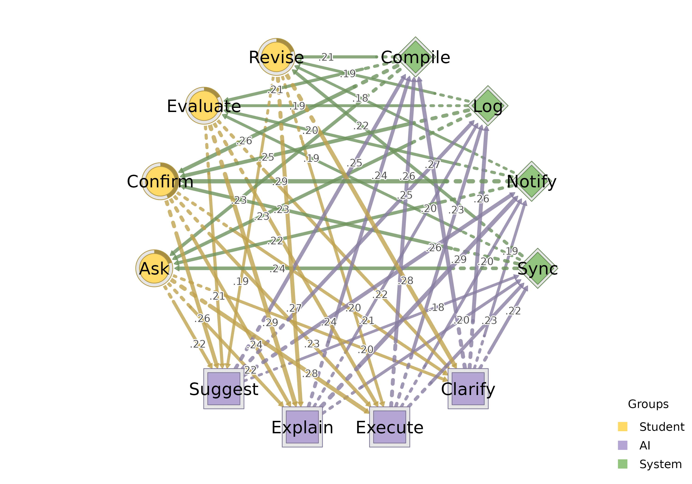
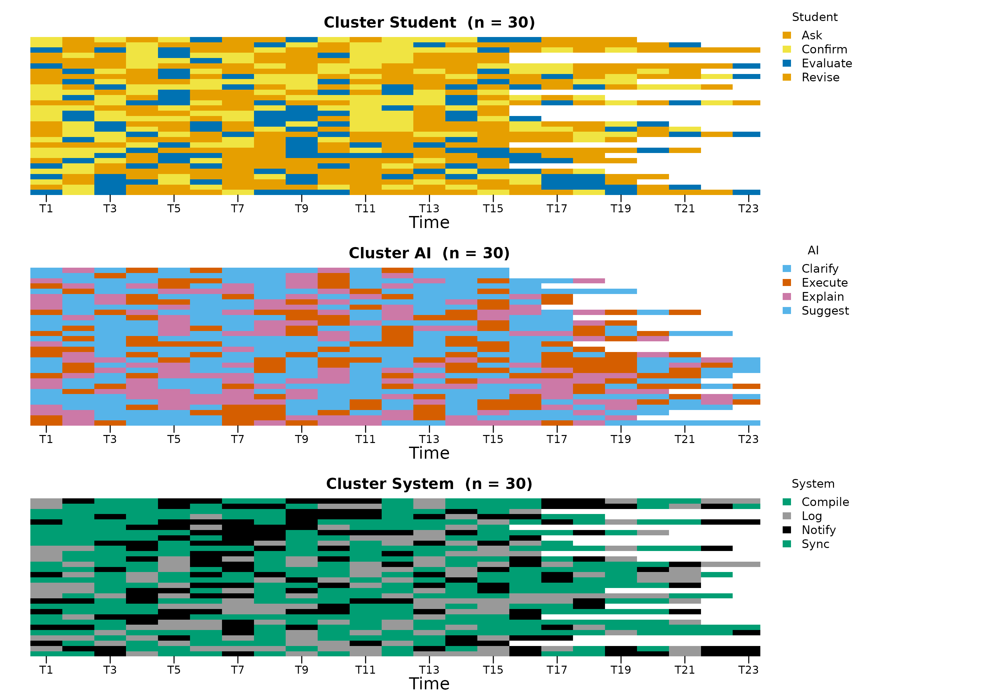
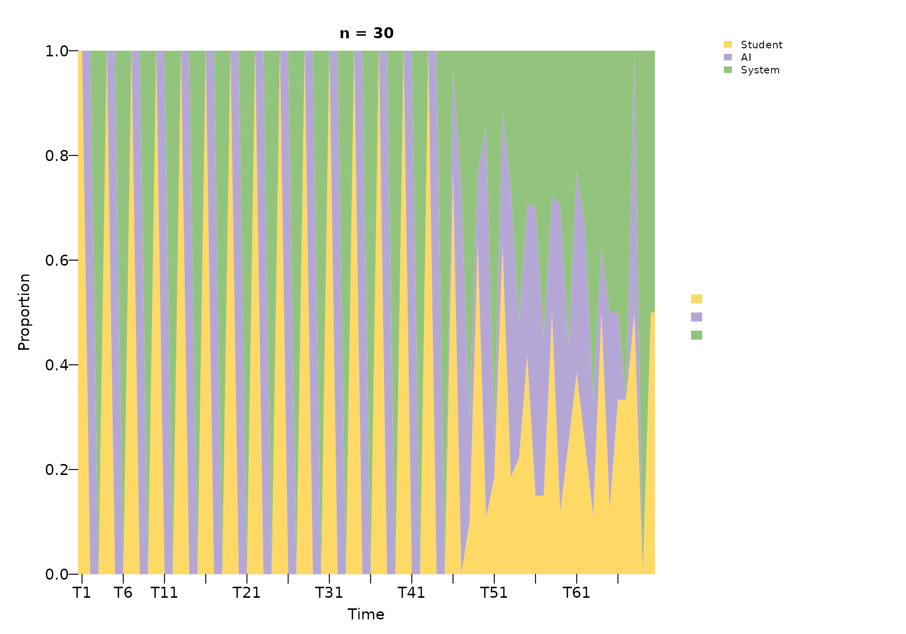
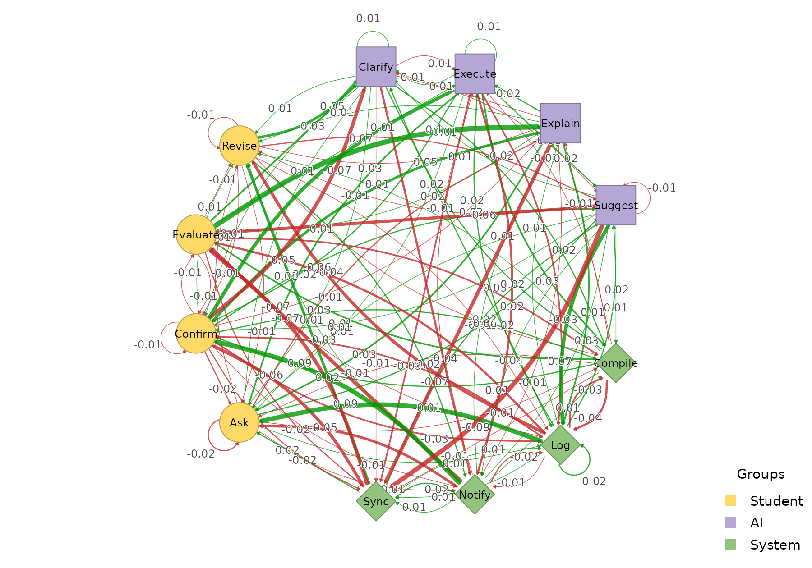
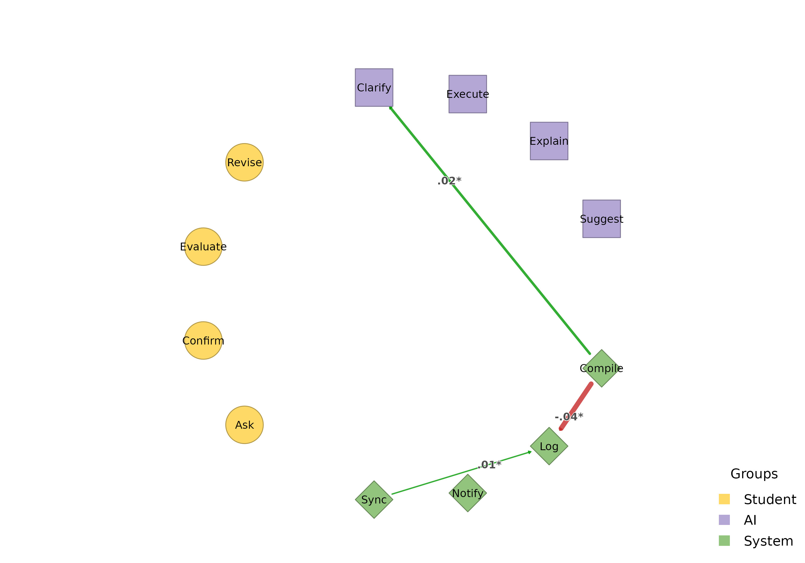
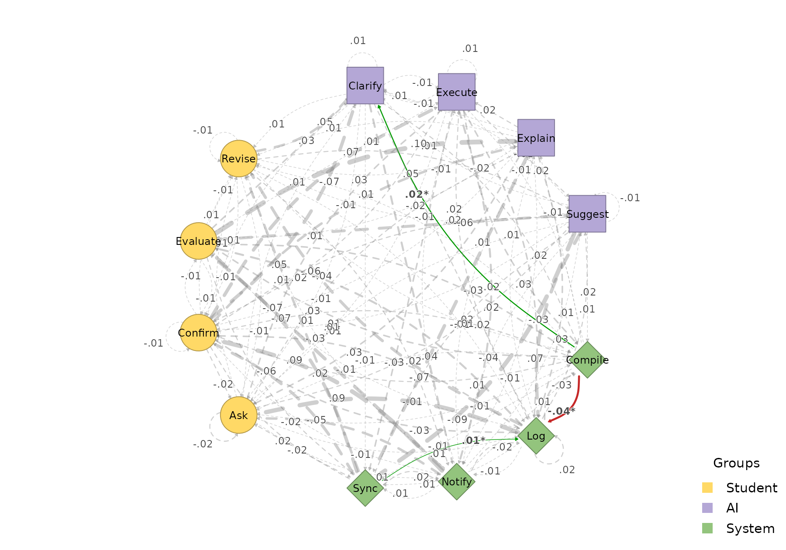

HTNA is not limited to two actor groups. This vignette demonstrates how to build and visualise a heterogeneous transition network with three groups.
Simulating a three-actor interaction
We simulate a collaborative coding session with three actors – a Student, an AI assistant, and a System (e.g. IDE or automated tooling) – each with four distinct codes:
library(htna)
set.seed(42)
student_codes <- c("Ask", "Confirm", "Revise", "Evaluate")
ai_codes <- c("Suggest", "Explain", "Execute", "Clarify")
system_codes <- c("Log", "Notify", "Compile", "Sync")
sessions <- paste0("S", sprintf("%03d", 1:30))
make_events <- function(codes, sessions, offset) {
rows <- lapply(sessions, function(sid) {
n <- sample(15:25, 1)
data.frame(
session_id = sid,
code = sample(codes, n, replace = TRUE),
order_in_session = seq_len(n) * 3L - offset,
stringsAsFactors = FALSE
)
})
do.call(rbind, rows)
}
student_data <- make_events(student_codes, sessions, 2L)
ai_data <- make_events(ai_codes, sessions, 1L)
system_data <- make_events(system_codes, sessions, 0L)Building a 3-group network
Pass all three groups as a named list:
net3 <- build_htna(
list(Student = student_data, AI = ai_data, System = system_data)
)
net3
#> Transition Network (relative probabilities) [directed]
#> Weights: [0.006, 0.289] | mean: 0.103
#>
#> Weight matrix:
#> Ask Clarify Compile Confirm Evaluate Execute Explain Log Notify
#> Ask 0.000 0.204 0.020 0.007 0.000 0.279 0.224 0.027 0.007
#> Clarify 0.007 0.007 0.271 0.007 0.014 0.000 0.014 0.264 0.188
#> Compile 0.230 0.025 0.006 0.261 0.211 0.012 0.012 0.000 0.012
#> Confirm 0.000 0.208 0.023 0.000 0.000 0.231 0.243 0.006 0.012
#> Evaluate 0.000 0.219 0.008 0.000 0.000 0.242 0.289 0.000 0.016
#> Execute 0.013 0.020 0.260 0.020 0.000 0.007 0.000 0.227 0.200
#> Explain 0.026 0.000 0.237 0.000 0.013 0.020 0.000 0.204 0.289
#> Log 0.228 0.020 0.000 0.248 0.195 0.027 0.007 0.040 0.007
#> Notify 0.218 0.027 0.014 0.286 0.197 0.000 0.027 0.014 0.014
#> Revise 0.000 0.281 0.016 0.000 0.008 0.195 0.266 0.000 0.016
#> Suggest 0.007 0.014 0.246 0.021 0.007 0.007 0.007 0.246 0.261
#> Sync 0.237 0.007 0.007 0.230 0.193 0.022 0.007 0.015 0.022
#> Revise Suggest Sync
#> Ask 0.000 0.218 0.014
#> Clarify 0.007 0.000 0.222
#> Compile 0.211 0.012 0.006
#> Confirm 0.006 0.260 0.012
#> Evaluate 0.000 0.211 0.016
#> Execute 0.000 0.020 0.233
#> Explain 0.013 0.000 0.197
#> Log 0.195 0.020 0.013
#> Notify 0.177 0.020 0.007
#> Revise 0.000 0.188 0.031
#> Suggest 0.007 0.000 0.176
#> Sync 0.222 0.030 0.007
#>
#> Initial probabilities:
#> Confirm 0.433 ████████████████████████████████████████
#> Ask 0.200 ██████████████████
#> Revise 0.200 ██████████████████
#> Evaluate 0.167 ███████████████
#> Clarify 0.000
#> Compile 0.000
#> Execute 0.000
#> Explain 0.000
#> Log 0.000
#> Notify 0.000
#> Suggest 0.000
#> Sync 0.000The actor partition now contains three levels:
table(net3$node_groups$group)
#>
#> Student AI System
#> 4 4 4Plotting
With three or more groups, plot_htna() automatically
switches to a polygon (triangle) layout. The three colours from the
default HTNA palette are applied in order:
plot_htna(net3)
Per-actor sequences
sequence_plot_htna() works the same way with three
actors. With by = "state" each row is one (session, actor)
and is coloured by the concrete code; with by = "group"
cells are coloured by actor (here Student / AI / System):
sequence_plot_htna(net3, by = "state", type = "index")
sequence_plot_htna(net3, by = "group", type = "distribution")
The by = "state" legend is split into one block per
actor with the actor name as a sub-title, so the reader can tell at a
glance which codes belong to which actor.
Comparing two networks
Build a second network from the same actors (e.g. with different
session-level dynamics) and use plot_htna_diff() for the
elementwise difference. Positive differences are green, negative
red:
set.seed(7)
student_data2 <- make_events(student_codes, sessions, 2L)
ai_data2 <- make_events(ai_codes, sessions, 1L)
system_data2 <- make_events(system_codes, sessions, 0L)
net3b <- build_htna(
list(Student = student_data2, AI = ai_data2, System = system_data2)
)
plot_htna_diff(net3, net3b)
permutation_htna() provides the non-parametric
significance test; pass the result to plot_htna_diff() to
surface only the edges that differ significantly:
perm3 <- permutation_htna(net3, net3b, iter = 200)
plot_htna_diff(perm3)
plot_htna_diff(perm3, show_nonsig = TRUE)
Meta-paths across three actors
Patterns now span all three actor types. The default is state-level,
with a meta_schema rollup column tagging each row with its
type-level template:
extract_meta_paths(net3, length = 3)
#> Patterns (state-level) over 30 sequences
#> Rows: 387 | Lengths: 3 | Gaps: 0
#> schema meta_schema length gap count n_seq support
#> Compile->Revise->Clarify System->Student->AI 3 0 16 13 0.433
#> Explain->Compile->Confirm AI->System->Student 3 0 16 11 0.367
#> Confirm->Clarify->Compile Student->AI->System 3 0 15 14 0.467
#> Confirm->Execute->Compile Student->AI->System 3 0 13 12 0.400
#> Evaluate->Explain->Compile Student->AI->System 3 0 13 12 0.400
#> Clarify->Compile->Evaluate AI->System->Student 3 0 13 11 0.367
#> Log->Ask->Execute System->Student->AI 3 0 13 10 0.333
#> Sync->Evaluate->Execute System->Student->AI 3 0 13 11 0.367
#> Compile->Evaluate->Explain System->Student->AI 3 0 13 11 0.367
#> Compile->Confirm->Suggest System->Student->AI 3 0 13 12 0.400
#> frequency lift
#> 0.009 16.84
#> 0.009 11.93
#> 0.009 11.86
#> 0.008 10.08
#> 0.008 13.00
#> 0.008 13.79
#> 0.008 12.46
#> 0.008 16.08
#> 0.008 13.00
#> 0.008 10.64
#> ... (377 more)Pass level = "type" to collapse the rows into the
type-level meta-path summary:
extract_meta_paths(net3, level = "type", length = 3)
#> Meta-paths (type-level) over 30 sequences
#> Rows: 17 | Lengths: 3 | Gaps: 0
#> schema length gap count n_seq support frequency lift
#> Student->AI->System 3 0 510 30 1.000 0.295 7.98
#> AI->System->Student 3 0 497 30 1.000 0.288 7.78
#> System->Student->AI 3 0 487 30 1.000 0.282 7.62
#> AI->System->AI 3 0 41 10 0.333 0.024 0.62
#> System->AI->System 3 0 37 10 0.333 0.021 0.56
#> System->Student->System 3 0 32 10 0.333 0.019 0.50
#> Student->System->Student 3 0 27 9 0.300 0.016 0.44
#> Student->AI->Student 3 0 24 7 0.233 0.014 0.39
#> AI->Student->AI 3 0 24 7 0.233 0.014 0.38
#> System->System->System 3 0 16 7 0.233 0.009 0.24
#> ... (7 more)A schema filters the search. For example, the concrete state-level instances of paths where the System mediates between Student and AI:
extract_meta_paths(net3, schema = "Student->System->AI")
#> State-level instances of schema 'Student->System->AI' over 30 sequences
#> (no rows met the filters)